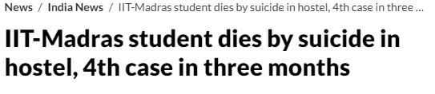
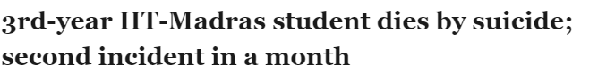
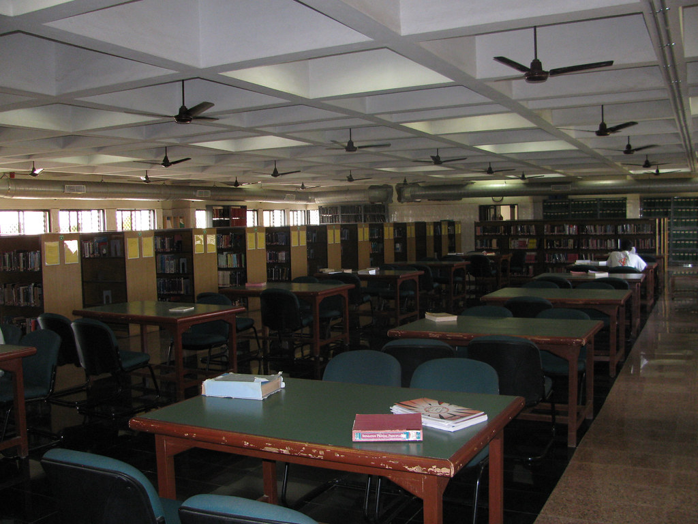
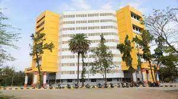
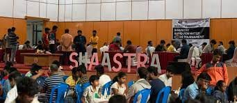

- We’re on your favourite socials!


IIT Madras Expert's Review and Verdict
Campus at a Glimpse
Nestled in the heart of Chennai, IIT Madras is the gateway to engineering excellence in India. The University Grant Commission (UGC) has declared it as the 'Institute of National Importance’. Consistently reigning at the top of the NIRF Ranking for eight consecutive years speaks for itself. The campus is surrounded by lush greenery offering a serene and conducive environment for learning and research. IIT Madras takes pride in its world-class infrastructure, facilities and abundant opportunities offered to the students. With over 95% placement rate for undergraduate courses and a high average package, IIT Madras demonstrates its commitment to providing lucrative career opportunities.
IIT Madras offers a wide range of undergraduate and postgraduate programmes in engineering, science, management and humanities. The most popular of all is the four-year BTech programme which every aspiring student dreams of getting into. IITM is a citadel of rigorous academics and research with over 600 extremely knowledgeable faculty. It offers an optimal student-to-faculty ratio of 10:1.
IIT Madras is undeniably a beacon of excellence! However, it has its own set of challenges such as unbalanced gender ratio and undue competition among students. Various media reports including The HT have been reporting several cases of suicides at IIT Madras. Stress to perform well academically could be one of the reasons for these unnatural deaths.

Source: Hindustan Times

Source: The Times of India
IIT Madras NIRF Ranking
IIT Madras once again topped the NIRF Rankings under engineering and overall categories in 2023. It has cemented its position as the best engineering college in India by consecutively ranking at the first position over the last 8 years. Additionally, IIT Madras held the 15th position among top management colleges in India. However, its management ranking dipped 5 positions from 2022.
|
Category |
Rank (Score) |
||
|
2023 |
2022 |
2021 |
|
|
Overall |
1 (86.69) |
1 (87.59) |
1 (86.76 |
|
Engineering |
1 (89.79) |
1 (90.04) |
1 (90.19) |
|
Management |
15 (62.83) |
10 (66.60) |
13 (64.32) |
Our Take:
IIT Madras is the gold standard for engineering education in India. Consecutively securing the first spot in NIRF ranking is a testament to the institute’s excellence in all areas of engineering education. IIT Madras is solid for management programmes as well but it should try harder to retain its rankings, as it recorded a drop of 5 ranks in 2023 vs 2022.
IIT Madras Academia & Batch Size
IIT Madras is one of the most prestigious engineering institutes in India. It is known for its rigorous academics, world-class faculty and cutting-edge research facilities. IIT Madras course list includes UG and PG courses such as, BTech, BTech + MTech, M.Tech, MBA M.Sc, MA and MS.
IIT Madras Academia
IIT Madras is well known for its excellence in teaching and research. The academic departments are actively striving to achieve excellence in their respective fields. The consistent organisation of academic and extracurricular activities, creation of scientific products, extensive journal publication by the faculty, provision of industrial consultancy, fostering startup culture through the incubation cell and collaboration with industry and academic institutions globally are clear indicators of IIT Madras’ dynamic academia.
IIT Madras Batch Size
Let’s have a look at the 2021-22 batch size as per NIRF Report 2023.
|
Programmes |
Total Intake |
|
UG (4-Years) |
3072 |
|
UG (5-Years) |
1650 |
|
PG (2-Years) |
1546 |
|
PG (3-Years) |
936 |
|
PG-Integrated |
256 |
|
Total |
7,460 |
Our Take:
There is no doubt that IIT Madras stands tall as one of the premier institutes. The institute provides diverse courses and curriculum taught by 680+ highly experienced faculty members. Additionally, IIT Madras promotes a strong research culture in diverse fields. As per students on Quora, it is the most research-focused IIT in India. IIT Madras is a great place for higher education, but it’s not all rainbows and sunshine. The academics are tough and the competition is fierce among students. Also, maintaining 85% compulsory attendance becomes difficult sometimes.
IIT Madras Infrastructure
IIT Madras has world-class infrastructure and facilities. However, the room for improvement is always present. Let’s look into the details.
Classroom: Classrooms at IITM are spacious and ICT-enabled. As per students, most of the classrooms don’t have AC facilities. However, not much problem has been encountered by the students due to its location near a forest area.

Auditorium/ Seminar Halls/ Labs: IIT Madras has a 400-seater auditorium known as the Central Lecture Theatre. Various seminar halls are a part of its infrastructure. Moreover, IITM has more than 40 laboratories which are well-equipped with modern technology and equipment.
Library: IITM has a central library well equipped with academic resources and modern facilities.

Internet: The institute provides high-speed internet connection across the campus. The speed reaches up to 95 MBPS as per student reviews on Quora.
Hostel: IIT Madras has hostel facilities for males and females. It has 20 hostels in total, 5 for females and 15 for male students. As per students, IIT Madras hostels have all the required facilities such as a 24x7 internet connection, TV, Sports area, gym, laundry and mess.

Research Park: IIT Madras has India’s first university-based research park to develop technology-based solutions and foster a research culture and startup ecosystem. It has 200+ labs, 200+ startups incubated and 1300+ patents have been filed. Students on Quora have recognised IIT Madras as the Stanford University of India due to its unique research park.
Activities: IIT Madras is a hub of student activities such as Extra Mural Lectures (EML), Leisure Time Activity Program (L-TAP), NCC, NSS, NSO, NCA, club activities, seminars, events and technical fests.

Cafe/ Hangouts: The campus has multiple canteen facilities for students and residents. A comprehensive list is mentioned below.
- Bachelors Restaurant FFT
- Coolbiz-Girls SFC
- Grama Bhojanam-FFT
- Café Coffee Day (CCD)
- Kannan Catering Services-FFT
- Leo Fortune
- Student Tea Stall
- Indian Coffee House
- Stud Dosa-Girls SFC
- Usha Café-Girls SFC
- Woss-FFT
- Wow Momo-FFT
- Anjappar Chettinad Rest
Also, there are many hang-out areas near IIT Madras such as Adyar Ananda Bhavan, The Guindy Snake Park, The Central Leather Research Institute (CLRI) Campus, the Marina Beach and the Eliot beach. On Quora, students have shared their happy experiences with the location and nearby areas. However, if you are non-Tamilian, you might face language barriers in local transportation like auto rickshaws and buses.
Our Take:
There is still a scope of improvement when it comes to classrooms at IIT Madras. Being one of the prestigious institutes of India, one cannot digest the fact the institute classrooms are not fully airconditioned. On a brighter side, the institute has spacious auditoriums, well stocked library, a world class research centre etc. Also, for students to hangout & chill and also to unwind the academic stress, IITM madras has plethora of eating joints.
IIT Madras Internships and Placements
IIT Madras Internships 2023-23
According to IIT Madras internship report 2022-23, a notable 778 internship offers were provided by over 140 companies. Additionally, 231 students earned pre-placement offers in recognition of their outstanding performance during their internships. The maximum stipend of INR 12 Lakh per month was offered in the IT & Software, and Financial services sectors. Also, the average stipend offered to B.Tech, Dual Degree (DD) and Interdisciplinary Dual Degree (IDDD) students was INR 10,000 .
IIT Madras Placements 2022-23
IIT Madras has a dedicated career development cell that trains students for placement opportunities. As per the IIT Madras placement report 2022-23, students across all the courses received 1612 offers from 480+ companies. Out of 1612 offers, 172 offers provided CTC more than 30 LPA, 312 offers fell in the range of INR 15-20 LPA and 152 in the range of 5-10 LPA. The institute saw an increase of 121 offers in 2023 as compared to 2022.
|
Year |
No. of full-time offers |
|
2022-23 |
1612 |
|
2021-22 |
1491 |
|
2020-21 |
1046 |
The highest CTC for UG courses such as BTech, DD and IDDD was Rs 1.31 crore LPA. Furthermore, the average CTC was INR 17 LPA which is considerably higher than other courses. According to the NIRF 2023 report, the placement rate for UG students of the 2021-22 batch was 95%, which is amazing!
Our Take:
After scrutinising the available data, it is clear that IIT Madras offers abundant internship and placement opportunities to its students. With over 95% placement rate and a high average package, students can expect to earn at least 10-20 LPA after graduating from IIT Madras. The surge in offers from previous years signifies the institute’s continuous efforts to provide more opportunities to the students. Notably, 231 students secured PPO showing their outstanding contribution. It is evident that the placement cell is playing a pivotal role in preparing students for IIT Madras placement and internships.
IIT Madras Diversity & Representation
Let's have a look at gender participation and demographics at IIT Madras as per the NIRF Report 2023 for the batch of 2021-22.
Course-wise Gender Participation at IIT Madras
|
Programmes |
No. of Male Students |
No. of Female Students |
|
UG (4-Years) |
2489 (81%) |
583 (18.94%) |
|
UG (5-Years) |
1359 (82.34%) |
291 (18.94%) |
|
PG (2-Years) |
1243 (80.40%) |
303 (19.60%) |
|
PG (3-Years) |
780 (83.41%) |
156 (16.59%) |
|
PG-Integrated |
99 (38.64%) |
157 (61.36%) |
|
Total |
5,970 (80.02%) |
1490 (19.98%) |
Course Wise Demographic Representation at IIT Madras
|
Programmes |
No. of Home State Students |
No. of Other State Students |
International Students |
|
UG (4-Years) |
526 (40.31%) |
2544 (59.69%) |
2 (0.15%) |
|
UG (5-Years) |
349 (21.15%) |
1301(78.85%) |
0 |
|
PG (2-Years) |
201 (13 %) |
1326 (85.86%) |
19 (1.23%) |
|
PG (3-Years) |
177 (18.87%) |
759 (81.13%) |
0 |
|
PG-Integrated |
51 (19.92%) |
205 (80.08%) |
0 |
|
Total |
1304 (17.5%) |
6135 (82.5%) |
21 |
Our Take:
It is evident that a substantial majority of the students, around 80% are male which outnumbers female students. However, the male-to-female ratio is better in PG-integrated programmes which is 38:62. Furthermore, a regional disparity is also visible at IIT Madras. Students from outside the state make up the majority of the student body, followed by students from Tamil Nadu. The number of international students is relatively small. Overall, the data reflects that IIT Madras is a predominantly male-centric institute. However, the institute has been a part of various initiatives to increase the females enrollment. It was also selected by the Department of Science and Technology, Government of India, to advance Women in STEM (Science, Technology Engineering, and Mathematics) through the ‘GATI’ initiative.
IIT Madras Faculty/College Administration & Management
IIT Madras has highly qualified and experienced faculty. The faculty members are experts in their respective fields and have published their work in top academic journals. IIT Madras faculty are also actively involved in research and innovation. They have developed new technologies and products that have had a positive impact on society. For example, IIT Madras faculty have developed new methods for renewable energy generation, water purification, and disease diagnosis. The majority of students have positive feedback for the faculty of IITM. However, students have listed a few professors that were too strict and unsupportive.
Our Take:
Overall, the faculty of IIT Madras are highly qualified and experienced. Positive feedback from the majority of students reflects that the faculty are experts and provide high-quality education and support to the students. However, it's common for students to have varying experiences with different professors.
IIT Madras Location
Chennai, the “Gateway to South India”, is home to one of the most prestigious engineering institutes in India, IIT Madras. IITM at Sardar Patel Road, Chennai, Tamil Nadu is a prime location. The campus is adjacent to the Guindy Snake Park and opposite to the Central Leather Research Institute (CLRI). The campus is located 10 km from the Chennai Airport, 12 km from the Chennai Central Railway Station, and is well connected by city buses. Kasturba Nagar is the nearest station on the Chennai MRTS line.
IIT Madras: Expectation vs Reality CLD Verdict!
IIT Madras is a renowned institution that excels in teaching, research and industrial consultancy in the country. Students from all over the country aspire to get IIT Madras admission and embark on a transformative journey. From academics to infrastructure, facilities, faculties, internships and placements, IITM offers a holistic experience to its students. A student gets a conducive environment with a platform to thrive as a learner at IIT Madras. However, the institute must take measures to safeguard the lives of its students against the unnatural deaths. Regular programmes that focus on mental health awareness could be a value addition.
Our Final Checklist!
|
Yay! |
Nay! |
|
World-class infrastructure and facilities |
Unbalanced gender ratio |
|
Top-ranked in NIRF Ranking |
Academic stress and competition |
|
Rigorous academia |
Instances of student suicides |
|
Focus on research |
Lack of AC in some classrooms |
|
Abundant internship and placement opportunities |
Strict attendance policy |
|
High student faculty-ratio |
Language barrier for non-Tamilians |
|
All-round student development |
What students says about IIT Madras
- IIT Madras has a well-designed curriculum which covers both basics and advanced topics.
- The faculty: student ratio is good at 1:80.
- All faculty members are well-qualified with PhDs in their respective fields.
- IIT Madras has a good reputation globally for its high-quality education and research.
- The institute has a large and diverse community of students, faculty and alumni.
- The exams are tough and students are expected to put in a lot of effort.
- The course fees are high at INR 200000 per year.
- The class size is large at 115 students.
- IIT Madras is located in a remote area and the campus life may not be as vibrant as in other institutes.
- The admission process is competitive and students have to clear the JEE Advanced exam to get in.
Note: Insights gathered through various sources across internet like student reviews, ratings, student testimonials etc
IIT Madras Reviews and Rating
Why to choose IIT Madras?

4.8
(9 Verified Reviews)
Share your college experience
Earn unlimited cash rewards  Earn up to ₹10 for every approved college review. Refer your friends to write reviews and earn ₹10 for each of their approved reviews too.
Earn up to ₹10 for every approved college review. Refer your friends to write reviews and earn ₹10 for each of their approved reviews too.

Student Feedback and Rating on IIT Madras
Enrollment : 2020 | Aug 02, 2025
Life at IIT Madras: A Student’s Perspective
Overall Life at IIT Madras blends academic rigor with vibrant hostel culture, technical fests, and student clubs. The lush green campus and opportunities for innovation make it a memorable journey.
Placement Students describe IIT Madras as transformative, with top-notch academics, peer learning, cultural fests, and excellent placements, shaping careers in engineering, research, and beyond.
Infrastructure IIT Madras is known for world-class faculty, cutting-edge research, and strong industry ties. Students here gain exposure to top innovations, startups, and leadership opportunities in technology.
Faculty IIT Madras stands out with its NIRF rankings, innovation ecosystem, international collaborations, and alumni network, making it one of the most sought-after technology institutes in India.
Hostel The IIT Madras campus offers modern facilities, diverse student culture, and global exposure. With its focus on academics, entrepreneurship, and career growth, it prepares students for future success.
Enrollment : 2022 | Sep 10, 2024
Over All Review of IIT Madras Engineering college
Overall IIT Madras, established in 1959, is one of the leading engineering institutions in India. Here's an overview of its key aspects: 1. **Academics**: IIT Madras offers a wide range of undergraduate, postgraduate, and doctoral programs in engineering, science, and humanities. The curriculum is rigorous, and the institute is known for its strong emphasis on research and innovation. 2. **Faculty**: The faculty at IIT Madras are highly qualified and involved in cutting-edge research. Many are recognized globally for their contributions to their fields. 3. **Research**: The institute is a hub for research, with numerous research centers and collaborations with industry and other academic institutions. It contributes significantly to advancements in technology and science. 4. **Campus**: The campus is expansive and well-equipped, with state-of-the-art laboratories, libraries, and recreational facilities. It provides a conducive environment for both academic and extracurricular activities. 5. **Industry Connections**: IIT Madras has strong ties with various industries, leading to ample internship and job opportunities for its students. It is known for its entrepreneurial spirit and support for startups. 6. **Global Ranking**: IIT Madras frequently appears in the top ranks of national and global engineering school rankings. It is recognized for its excellence in education and research. 7. **Alumni**: The institute has a strong network of successful alumni who have made significant contributions to industry, academia, and entrepreneurship. Overall, IIT Madras is highly esteemed for its academic rigor, research output, and impact on the broader technological and scientific community.
Placement The placement scenario at IIT Madras is highly impressive and one of the best among Indian institutions. The institute consistently boasts high placement rates, with a large percentage of students securing positions before graduation. Leading national and international companies across various sectors, including technology, finance, consulting, and research, actively recruit from IIT Madras. The placement process is well-organized, with extensive pre-placement training, workshops, and career counseling to prepare students. Competitive salary packages and prestigious job offers are common, reflecting the institute's strong industry connections and the high caliber of its graduates. Overall, IIT Madras maintains a stellar placement record, contributing significantly to its reputation.
Infrastructure IIT Madras boasts a well-developed infrastructure that supports its academic and research excellence. The campus features state-of-the-art laboratories, modern classrooms, and extensive libraries. Facilities include advanced computing centers, research hubs, and specialized labs for various engineering and scientific disciplines. The institute also has a range of recreational amenities, including sports complexes, hostels, and dining facilities. The expansive, green campus provides a conducive environment for learning and innovation. Additionally, the institute's emphasis on sustainable practices is reflected in its infrastructure, with eco-friendly buildings and energy-efficient systems enhancing its overall functionality and appeal.
Faculty The faculty at IIT Madras are highly esteemed for their academic and research prowess. They are renowned for their expertise in various fields of engineering, science, and humanities. Many faculty members hold advanced degrees from prestigious institutions and have substantial experience in both industry and academia. Their research contributions are significant, often leading to advancements in technology and science. The faculty's commitment to teaching and mentoring is evident through their engaging lectures, innovative pedagogical approaches, and guidance on research projects. Overall, the faculty at IIT Madras plays a crucial role in maintaining the institution's reputation for excellence in education and research.
Hostel The hostel facilities at IIT Madras are well-regarded for their quality and support to student life. The hostels offer comfortable accommodation with various amenities, including Wi-Fi, study areas, and recreational facilities. Rooms are generally equipped with basic furniture and provide a conducive environment for both study and relaxation. The campus includes separate hostels for undergraduate and postgraduate students, with dining services, common rooms, and sports facilities. The hostels are managed to ensure a safe and supportive environment, promoting a sense of community among residents. Overall, IIT Madras's hostel facilities are considered to be comprehensive and conducive to student well-being and academic success.
Enrollment : 2023 | Mar 25, 2024
A Brief About IIT Madras
Overall It is one of the top IT colleges in India.It is a place where you can compete with a lot of competitors like you.It provide a great academic environment.
Placement No need to worry about placements because every small to international company visits this institute for placements.and the average package is 17 - 20 LPA.
Infrastructure The overall college contains a main acedamic buliding along with a large play ground, a canteen and hostels. The buildings are so nicely designed and it is very attractive.
Faculty The faculity is very supportive, Interactive and are highly qualified.They are very helpful and always stands with students to help them.They also support us mentally sometimes.
Hostel Hostels are much facilating. Rooms are given with a fan, A shelf, an almirah, a bed and a study table and chair. The cleanliness is also not bad. The washrooms are available in each individual room.
Enrollment : 2026 | Feb 19, 2024
Title: Navigating Excellence: A Comprehensive Review of IIT Madras
Overall Located in Chennai, India, the Indian Institute of Technology Madras (IIT Madras) stands as a beacon of academic brilliance and innovation. As one of the premier engineering institutes in India, IIT Madras has garnered acclaim for its rigorous academic programs, cutting-edge research initiatives, and vibrant campus life. Here's an overarching review of my experience at this esteemed institution: Academic Excellence: IIT Madras is renowned for its academic rigor and excellence. The institute offers a diverse range of undergraduate, postgraduate, and doctoral programs across various engineering, science, and humanities disciplines. The curriculum is meticulously crafted to blend theoretical knowledge with practical applications, ensuring that students receive a holistic education that prepares them for the challenges of the real world. World-Class Faculty: The faculty members at IIT Madras are distinguished scholars and experts in their respective fields. Their unwavering commitment to teaching, research, and mentorship significantly enriches the learning experience. With their guidance and expertise, students are empowered to delve deep into their areas of interest, fostering a culture of intellectual curiosity and academic excellence. Cutting-Edge Research: IIT Madras is at the forefront of research and innovation, with numerous research centers and laboratories dedicated to addressing pressing global challenges. From advanced materials and nanotechnology to artificial intelligence and renewable energy, the institute's research endeavors span a wide spectrum of disciplines. Students have ample opportunities to engage in research projects, collaborate with faculty members, and contribute to groundbreaking discoveries. Campus Life and Culture: The campus life at IIT Madras is vibrant and dynamic, offering a plethora of extracurricular activities, clubs, and cultural events. From technical symposiums and hackathons to music festivals and literary gatherings, there's never a dull moment on campus. The institute's sprawling campus is equipped with state-of-the-art facilities, including modern classrooms, well-stocked libraries, and world-class sports complexes, providing students with a conducive environment for holistic growth and development. Placement and Career Opportunities: IIT Madras boasts an impressive track record when it comes to placements. The institute's strong industry connections, coupled with the exceptional caliber of its students, attract leading companies from diverse sectors for campus recruitment drives. The dedicated placement cell provides extensive support and guidance to students throughout the placement process, ensuring that they secure rewarding career opportunities in reputed organizations. Overall Impression: In conclusion, my experience at IIT Madras has been nothing short of transformative. The institute's relentless pursuit of excellence, coupled with its vibrant campus culture and world-class infrastructure, creates an unparalleled learning environment that fosters innovation, creativity, and leadership. As I reflect on my journey at IIT Madras, I am grateful for the myriad opportunities and experiences that have shaped me into a well-rounded individual poised to make meaningful contributions to society.
Placement Placements at the Indian Institute of Technology Madras (IIT Madras) are a testament to the institute's commitment to excellence and its reputation as a premier engineering institution in India. With a track record of stellar placements year after year, IIT Madras consistently attracts top recruiters from diverse sectors, offering students lucrative career opportunities and pathways to professional success. Here's an overview of the placement process and outcomes at IIT Madras: Robust Placement Process: The placement process at IIT Madras is meticulously planned and executed, beginning well in advance of the final year. The institute's dedicated placement cell works tirelessly to facilitate interactions between students and prospective employers, organize recruitment drives, and provide career guidance and support to students throughout the placement process. Diverse Recruitment Pool: IIT Madras attracts a diverse pool of recruiters from various sectors including technology, finance, consulting, manufacturing, and research and development. Leading multinational corporations, startups, government organizations, and research institutions vie for the opportunity to recruit top talent from the institute, offering a wide array of job profiles and career paths to students. Industry Connections: The institute's strong industry connections and alumni network play a pivotal role in facilitating placements. Recruiters value the rigorous academic training, practical exposure, and problem-solving skills that students acquire during their tenure at IIT Madras, making them highly sought after in the job market. Internship Opportunities: In addition to placements, IIT Madras also provides students with ample internship opportunities, allowing them to gain valuable industry exposure, hands-on experience, and professional skills. Many internship experiences often translate into pre-placement offers (PPOs) or full-time job offers, providing students with a head start in their careers. High Placement Statistics: The placement statistics at IIT Madras are consistently impressive, with a high percentage of students securing job offers from reputed companies even before the completion of their degree programs. The average salary packages offered to students are competitive, reflecting the quality of education, talent, and skills that they possess. Career Guidance and Support: The placement cell at IIT Madras offers comprehensive career guidance and support services to students, including resume building workshops, mock interviews, personality development sessions, and industry-specific training programs. These initiatives help students prepare effectively for the recruitment process and enhance their employability quotient. In conclusion, placements at IIT Madras serve as a gateway to promising career prospects and professional success for students. With its robust placement process, diverse recruitment pool, strong industry connections, and unwavering support from the placement cell, IIT Madras continues to uphold its legacy of producing top-notch engineering talent that makes significant contributions to the global workforce.
Infrastructure The infrastructure at the Indian Institute of Technology Madras (IIT Madras) is nothing short of exceptional, reflecting the institute's commitment to providing students with a conducive environment for learning, research, and innovation. Here's a comprehensive review: **State-of-the-Art Facilities:** IIT Madras boasts state-of-the-art facilities that rival those of top international institutions. The campus is adorned with modern academic buildings equipped with cutting-edge laboratories, lecture halls, and seminar rooms. These facilities provide students with the resources they need to engage in hands-on learning and groundbreaking research across various disciplines. **Technological Advancements:** The institute continually invests in technological advancements to enhance the learning experience. From high-speed internet connectivity to advanced audio-visual aids in classrooms, students have access to the latest technological tools and resources that facilitate interactive and immersive learning. **Research Infrastructure:** IIT Madras is home to numerous research centers and laboratories that are equipped with advanced equipment and instrumentation. Whether it's nanotechnology, robotics, or renewable energy, the institute provides researchers with the necessary infrastructure to pursue cutting-edge research and make significant contributions to their respective fields. **Library and Information Resources:** The Central Library at IIT Madras is a treasure trove of knowledge, housing an extensive collection of books, journals, research papers, and digital resources. The library's vast repository of academic materials caters to diverse disciplines and research interests, providing students and faculty members with access to valuable information and scholarly resources. **Residential Facilities:** The institute offers comfortable and well-maintained residential facilities for students, faculty, and staff. The hostels are equipped with modern amenities, including spacious rooms, recreational areas, and dining facilities. The residential infrastructure fosters a sense of community and camaraderie among students, creating a conducive environment for personal and intellectual growth. **Green Campus Initiatives:** IIT Madras is committed to sustainability and environmental conservation. The campus is adorned with lush greenery, eco-friendly buildings, and renewable energy installations. The institute's green campus initiatives not only promote environmental stewardship but also create a serene and picturesque setting conducive to learning and research. **Accessibility and Inclusivity:** The infrastructure at IIT Madras is designed to be accessible and inclusive for all members of the campus community. The institute provides barrier-free access to buildings and facilities, ensuring that individuals with disabilities can navigate the campus with ease. Additionally, the institute offers various support services and accommodations to promote inclusivity and diversity. In summary, the infrastructure at IIT Madras is a testament to the institute's commitment to excellence in education, research, and innovation. With its state-of-the-art facilities, technological advancements, research infrastructure, and emphasis on sustainability and inclusivity, IIT Madras provides students with an enriching and inspiring environment to pursue their academic and professional aspirations.
Faculty The faculty at the Indian Institute of Technology Madras (IIT Madras) is the cornerstone of the institution's academic prowess and reputation for excellence. Comprising distinguished scholars, researchers, and educators, the faculty members at IIT Madras are renowned for their expertise, dedication, and commitment to fostering a culture of learning, innovation, and academic excellence. Here's an overview of the faculty at IIT Madras: **Expertise and Credentials:** The faculty members at IIT Madras are distinguished experts in their respective fields, holding advanced degrees from prestigious institutions across the globe. Many faculty members are renowned scholars and researchers, with significant contributions to their areas of specialization through groundbreaking research, publications, and patents. Passion for Teaching and Mentorship: Beyond their scholarly achievements, the faculty at IIT Madras are passionate educators who are deeply invested in the academic and personal growth of their students. They bring a wealth of knowledge, experience, and enthusiasm to the classroom, fostering an engaging and stimulating learning environment that inspires curiosity, critical thinking, and intellectual exploration. Accessible and Approachable: The faculty members at IIT Madras are known for their approachability and accessibility to students. They actively engage with students both inside and outside the classroom, offering mentorship, guidance, and support to help students navigate their academic journey, pursue their interests, and achieve their goals. Research and Innovation: In addition to their teaching responsibilities, many faculty members at IIT Madras are actively involved in cutting-edge research and innovation. The institute's research-oriented culture encourages faculty members to pursue innovative research projects, collaborate with industry partners, and make significant contributions to advancing knowledge and solving real-world problems. Interdisciplinary Collaboration: IIT Madras fosters a culture of interdisciplinary collaboration, encouraging faculty members to collaborate across departments and disciplines to address complex challenges and explore emerging areas of research. This interdisciplinary approach enriches the learning experience for students and fosters a culture of innovation and creativity. Professional Development: The institute provides ample opportunities for faculty members to enhance their teaching and research skills through professional development programs, workshops, and seminars. This commitment to continuous improvement ensures that faculty members remain at the forefront of their fields and deliver high-quality education and mentorship to students. In summary, the faculty at IIT Madras plays a pivotal role in shaping the academic excellence, research prowess, and intellectual vibrancy of the institution. With their unparalleled expertise, passion for teaching, commitment to mentorship, and dedication to research and innovation, the faculty members at IIT Madras inspire and empower students to reach new heights of success and make meaningful contributions to society.
Hostel The hostel life at the Indian Institute of Technology Madras (IIT Madras) is an integral part of the college experience, offering students a vibrant and supportive community where they can forge lifelong friendships, pursue their interests, and create cherished memories. Here's an overview of the hostel facilities and the unique aspects of hostel life at IIT Madras: Comfortable Accommodation: IIT Madras provides students with comfortable and well-maintained hostel accommodation within the campus premises. The hostels are equipped with spacious rooms, modern amenities, and recreational facilities, ensuring a conducive living environment for students. Residential Community: The hostels at IIT Madras are more than just places to stay; they are vibrant communities where students from diverse backgrounds come together to live, learn, and grow. The hostel life fosters a sense of camaraderie, belonging, and mutual respect among residents, creating a supportive and inclusive atmosphere. Cultural Exchange: Living in the hostels exposes students to a rich tapestry of cultures, languages, and traditions from across the country. The diverse student population ensures lively interactions, cultural exchange, and the celebration of festivals and events from different regions, enriching the overall hostel experience. Academic Support: The hostel environment at IIT Madras provides students with ample opportunities for academic support and collaboration. Peer learning, study groups, and late-night study sessions are common occurrences in the hostels, fostering a culture of academic excellence and collaboration among residents. Recreational Facilities: In addition to academic pursuits, the hostels at IIT Madras offer various recreational facilities and activities to help students unwind and rejuvenate. Common areas, TV rooms, sports facilities, and indoor games provide residents with avenues for relaxation, socialization, and leisure activities. Cafeteria and Dining Facilities: The hostels are equipped with spacious dining halls and cafeterias that serve nutritious and hygienic meals to residents. The hostel messes offer a variety of cuisines and dining options, catering to diverse dietary preferences and ensuring that students enjoy wholesome and delicious meals. Safety and Security: The safety and security of students are paramount in the hostel premises. The institute maintains round-the-clock security personnel, surveillance cameras, and stringent access control measures to ensure the safety and well-being of residents. In summary, the hostel life at IIT Madras is a vibrant and enriching experience that complements the academic journey of students. With its comfortable accommodation, supportive community, cultural exchange, academic support, recreational facilities, and emphasis on safety and security, the hostels at IIT Madras truly serve as a home away from home for students, fostering personal growth, friendships, and cherished memories that last a lifetime.
Enrollment : 2022 | Feb 19, 2024
No. 1 college according to NIRF ranking .
Overall This College lives very well on the expectation level of students who dream about it while preparing for JEE Advanced. This college gives so many opportunities in a time of degree for a good future you can choose any way from here. here you will find resources for everything like UPSC, Arts, Placement and Higher studies, and many more.
Placement This college has the best placement in Indian colleges. 800 students were placed this year, and placement phase 2 is ongoing. In my department, ten students were already PPO and 70 students have been placed. You will get every resource to prepare for placement here. In the chemical core, 5-6 companies come for placement.
Infrastructure The lecture halls are well organized. Most departments have different buildings, computer labs, and study halls according to department . The central library is a big building with 2+ lakh books and 800+ student seating places. Most sports facilities are available here.
Faculty Professors are helpful and supportive. Some professors don't communicate well. They will be constantly available for doubts you can reach them in their office They share email and some professors also share their mobile numbers.
Hostel Most of the hostels are in good condition. First-year students get Mandakini Hostel, which is a new hostel. Most hostels have a gym, Volleyball, badminton, and table tennis court. Hostel food and campus canteen are not very good.
Enrollment : 2022 | Feb 15, 2024
Nirf-1 for almost 4 years
Overall IIT MADRAS IS A RESIDENTIAL INSTITUTE WITH NEARLY 8000 STUDENTS AND 550 FACULTY.CAMPUS IS LOCATED IN THE BEAUTIFUL WONDERLAND OF 690 ACRES AND SURROUNDED BY NATURE.IT HAS BEEN A TOP RANKED ENGINEERING COLLEGE FOR FOUR CONSECUTIVE YEARS
Placement Many core and non core company come here for placements and approximately 70-80% students get placed every year.highest and lowest lpa were 45 and 8lpa for my chemical engineering department.Getting intership is little hard only 10 students manage to get intern for my department last year..but you can go for off campus internships also.
Infrastructure Campus holds free wifi connectivity everywhere.The classrooms gives you a pleasant and rich feel.IIT MADRAS has one for the big library in India. Hostel contains single, double and triple sharing.The mess food is quite adjustable.
Faculty Professors here are quite helpful and knowledgeable,but grades here depends on how to interact with prof too.Teaching quality is quite okay .the semesters are easy to pass and get E or D grade but to get good grades like S or A u need to work really hard.
Hostel Most of the hostels are quite old and many new hostels are coming up.we have mandakini and swarnamuki hostel which is the biggest hostels in the campus with high-tech infrastructure.
Enrollment : 2023 | Feb 11, 2024
Good atmosphere and good environment
Overall Iit madras is constructed in a reserved forest which consists all domestic animals like cats and the speciality of iit madras is in the campus the black bucks are present..
Placement Placements are done very well in iitm as nearly 450 companies come for only electrical engineering so you can imagine how much craze is there for iitm college
Infrastructure The alumni are the persons who completed their degree and went for good placements and became a good engineers and constructed the iitm very well with the hel of central government
Hostel The mandakini hostel is a well built hostel in an eco friendly manner and the mandakini hostel looks like a multistorey building.also vending machines are also present in hostel..
Enrollment : 2023 | Feb 11, 2024
All about the College And Life
Overall Their are many options available in the institute.every options has its own club managed by the senior representatives.or their are many innovations teams too. Academic load is not too much. When you join any club on your interest then its became so easy yo enjoy your insti life
Placement In this branch , placement is okay. But after spending 4 years in the college people involves in other activity and they choose their own path as some people didn't like the branch so much.
Infrastructure Infrastructure is very nicely planned in the college.at first time it is confusing to know the infrastructure, but afterwards it becames familiar.The building's which are close to each other are all ovrrall connected.
Faculty Around 80 to 90 persent , faculties are good. The support us when we talk to them.If we have problem then we can go to the faculty advisor and we can ask our queries to them and they will guide you what are the options available in institute to achieve your goals
Hostel In first year all students pursuing btech or dual degree got the Mandakini Hostel. It is the best hostel amongst all other hostels.at next years we will get another hostels that arr varied but all are good enough to stay and feel comfortable
Enrollment : 2022 | Jul 05, 2023
wffecf kjfhuhfroivj ;fvlkfnblkf fn lfbnk
Overall cf edfgw sfvss shsh oiv soisjv8 uwr vlklkv mv9 wur vvkvrj ijslv;z vjjz ioj z;jfjb jrob lf; k zjbi jrej blk mfbl k mz oikb kmoi brjv kl fboia ejrbk zsbn;lfzsbno;ijae itrjb zf blknmao etjn bkfz
Top Courses at IIT Madras
Related Questions
You can find previous year question papers for JAM Mathematics from official website. Some of the good options to download IIT JAM Mathematics question papers are: IIT JAM official website or affiliated portals provide previous year question papers and answer keys. You can alternatively find the IIT JAM Mathematics Question Paper 2025 from our page as well.
JoSAA eligibility requires 2025 requires a passing grade in all the subjects in your Class 12 (or equivalent) examination. While the 75% (or 65%) criterion is important for the general/reserved category eligibility, it's also important that you pass all the subjects in your Class 12. If you have further queries regarding Engineering course admission, you can write to hello@collegedekho.com or call our toll free number 18005729877, or simply fill out our Common Application Form on the website.
The results of any free IIT JAM mock test you attempted will usually be accessible on the same website or platform where you took the test. You can check your results by doing the following:
- Check the platform or website:
Return to the website where the mock exam was held if it was one of such sites (such as the platform of a coaching centre or an educational website). Use the login information you used to register to access your account, if you have one. Look for a section that says "My Results," "Test History," or "Dashboard," since these might include your mock test results and feedback.
- Instant Results:
Results from a lot of free practice exams are available right away. If so, see if your score appeared on the platform immediately after you finished the test.
- Notification via Email:
After you finish the test, some platforms send you an email with your findings. Look for any correspondence on the outcomes of your practice exam in your inbox (and spam folder).
- Speak with Support:
You can get in touch with the helpdesk or support staff of the website or platform where you took the test if you are unable to locate your results. They ought to be able to help you find your score.
Please let me know if you need help with anything else regarding to the IIT JAM mock test!
Dear Student,
We think that you have mistaken Mohammed Sahil Akhtar for Shoaib Akhtar, as per the records of the JEE Advanced exams; Md. Sahil Akhtar took JEE Advanced 2023 and secured a 99th rank. However, Akhtar dropped the vision of getting into IIT during counselling to pursue a double major in computer science and physics at MIT (Massachusetts Institute of Technology). He realised the opportunity to get into IT for research after taking the IOAA Olympiad in Georgia. Sahil is from Kolkata and completed his intermediate from Delhi Public School (DPS), Ruby Park, and he appeared for the JEE main 2023 for the April session. We hope that we have answered your query successfully. Stay tuned to CollegeDekho for the latest updates related to JEE Main 2025 and JEE Advanced 2025. We wish you success in your future!
Hi,
Students will receive their results via the email IDs they used to register on CollegeDekho. Please check your inbox for the results. If you haven't received them, kindly let us know, and we will initiate the process as soon as possible.